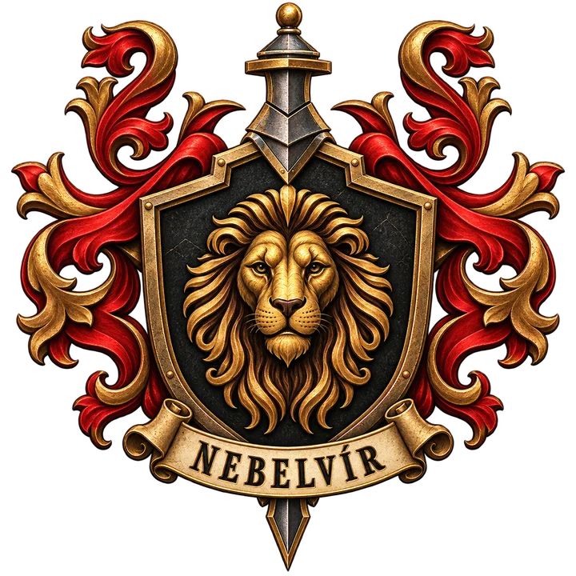
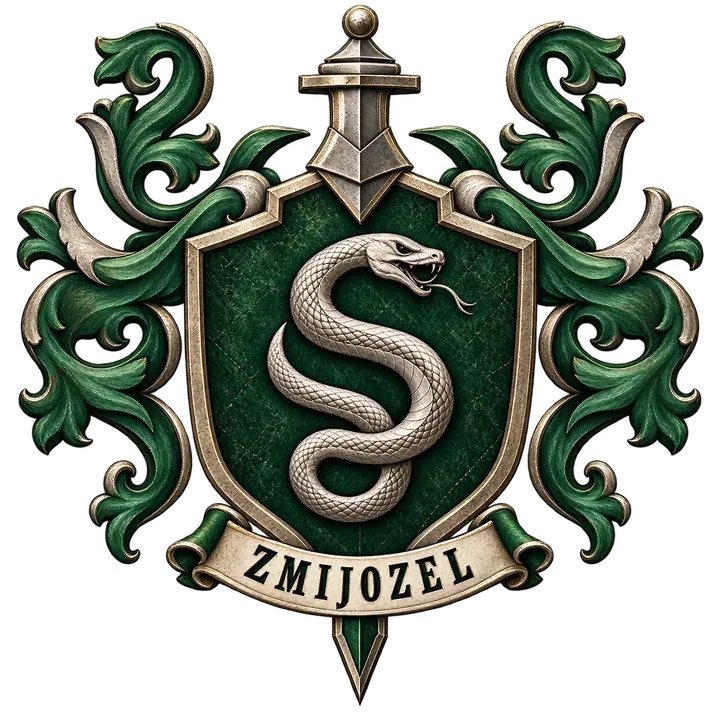
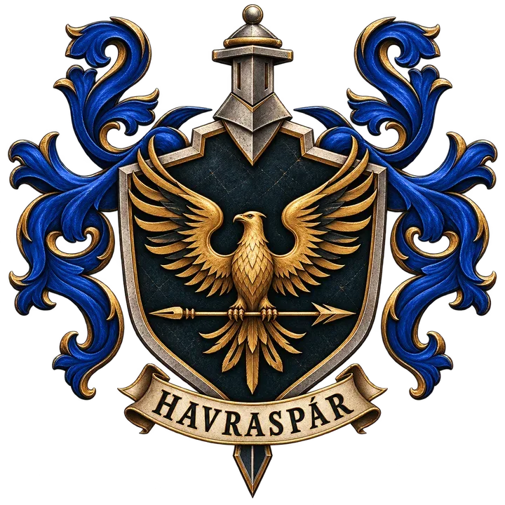

Čtyři koleje
Najděte své místo
Každá kolej má vlastní charakter, tradici i způsob, jakým se do její společenské místnosti vstupuje.

I
Nebelvír
Odvaha · statečnost · rytířskost
Nebelvír oceňuje ty, kteří se dokážou postavit strachu a jednat podle svého přesvědčení. Jeho studenti bývají odhodlaní, přímočaří a ochotní zastat se druhých.
Vstup do společenské místnosti střeží portrét Baculaté dámy a bez správného hesla nikoho nepustí dál.
Objevit vstup
II
Zmijozel
Ambice · důvtip · odhodlání
Zmijozel si cení cílevědomosti, vynalézavosti a schopnosti najít cestu tam, kde ji ostatní nevidí. Jeho studenti často dobře vědí, čeho chtějí dosáhnout.
Vstup je ukrytý ve sklepení v části kamenné stěny a odhalí se až tomu, kdo zná heslo.
Objevit vstup
III
Havraspár
Moudrost · tvořivost · zvídavost
Havraspár přitahuje studenty, kteří rádi přemýšlejí, hledají nové souvislosti a nebojí se vlastního pohledu na svět. Důležitější než naučená odpověď je schopnost uvažovat.
Na dveřích není běžná klika ani klíčová dírka. Bronzové orlí klepadlo místo hesla položí otázku.
Objevit vstup
IV
Mrzimor
Loajalita · píle · spravedlnost
Mrzimor staví na spolehlivosti, trpělivosti a férovosti. Jeho síla není v okázalosti, ale v lidech, na které je možné se spolehnout a kteří jsou ochotní pracovat pro společný výsledek.
Vchod se skrývá mezi starými sudy poblíž kuchyně. Otevře ho správně vyťukaný rytmus.
Objevit vstup